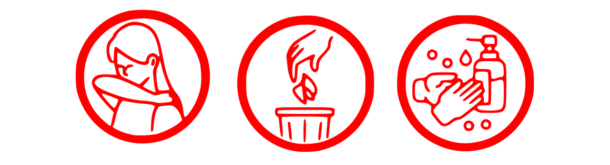
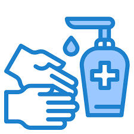

Para previnir a contaminação e propagação do coronavírus você pode seguir as orientações abaixo:
Lave com frequência as mãos até a altura dos punhos, com água e sabão,
ou então higienize com álcool em gel 70%. Essa frequência deve ser ampliada
quando estiver em algum ambiente público (ambientes de trabalho, prédios e
instalações comerciais, etc), quando utilizar estrutura de transporte público
ou tocar superfícies e objetos de uso compartilhado.
Ao tossir ou espirrar, cubra nariz e boca com lenço ou com a parte interna do cotovelo.
Não tocar olhos, nariz, boca ou a máscara de proteção fácil com as mãos não higienizadas.
Se tocar olhos, nariz, boca ou a máscara, higienize sempre as mãos como já indicado.
Mantenha distância mínima de 1 (um) metro entre pessoas em lugares públicos e de
convívio social. Evite abraços, beijos e apertos de mãos. Adote um comportamento
amigável sem contato físico, mas sempre com um sorriso no rosto
Higienize com frequência o celular, brinquedos das crianças e outro objetos que são utilizados
com frequência.
Não compartilhe objetos de uso pessoal como talheres, toalhas, pratos e copos.
Mantenha os ambientes limpos e bem ventilados
Evite circulação desnecessária nas ruas, estádios, teatros, shoppings, shows, cinemas
e igrejas.
Se estiver doente, evite contato próximo com outras pessoas, principalmente idosos
e doentes crônicos, busque orientação pelos canais on-line disponibilizados pelo SUS
ou atendimento nos serviços de saúde e siga as recomendações do profissional de saúde.
Durma bem e tenha uma alimentação saudável.
Recomenda-se a utilização de máscaras em todos os ambientes. As máscaras de tecido
(caseiras/artesanais), não são Equipamentos de Proteção Individual (EPI), mas podem
funcionar como uma barreira física, em especial contra a saída de gotículas
potencialmente contaminadas.
Os eventuais pacientes com casos graves do novo coronavírus devem ser encaminhados aos
hospitais de referência definidos pelos estados para isolamento e tratamento. Os casos
suspeitos leves podem não necessitar de hospitalização e ser acompanhados pela Atenção Primária e instituídas medidas de precaução domiciliar.
Consulte os hospitais mais próximos a você
Voltar para o início